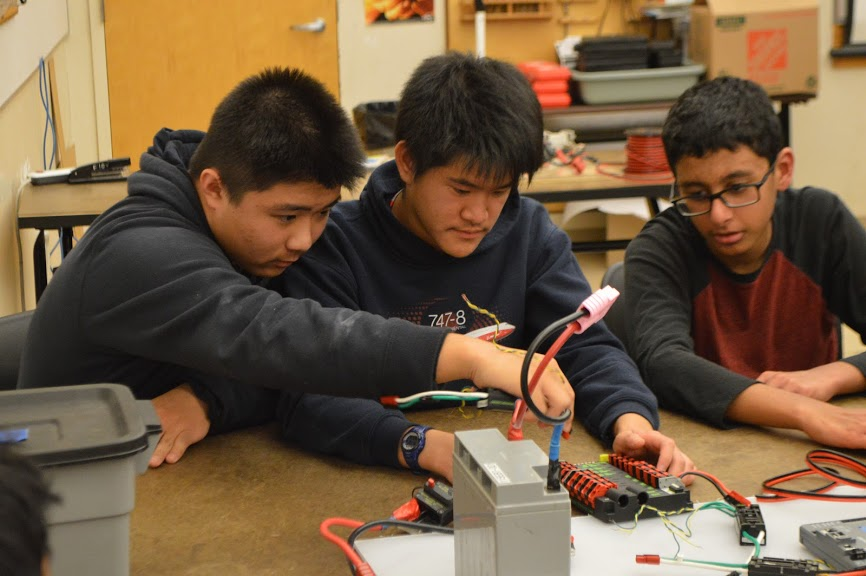
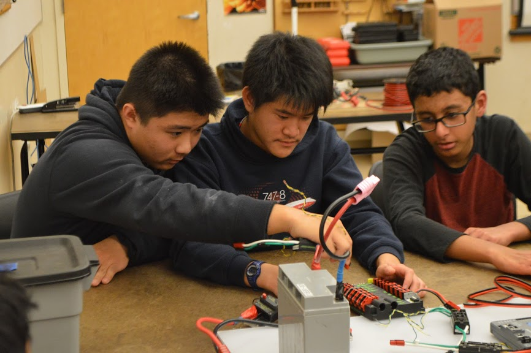

Portfolio




I currently work as a mentor for FIRST Robotics Competition (FRC) Team 3476 Code Orange, a community-based team out of Irvine, California. Having joined around November of 2022, I've spent the past few months writing grants and sponsorship applications for the team.
Outside of mentoring an FRC team, I don't have much work experience. However, I have over 500 hours of community service from the high school robotics team I was on, MVRT Team 115. Through the five years' experience with FRC, I've gained valuable skills such as communication, building trust, reliability, accountability, and STEM techniques to help me succeed in STEM-related fields, if I so desire to switch my major.
Over the summer, I plan on finding internship opportunities at local law firms (as I am looking to go into law), to try and gain some insight and some experience working in one.
FRC alum
Current FRC Mentor
First-year Stuudent at University of California, Riverside
• Wrote grant applications and sponsorship applications for team MVRT
• Presented multiple awards to FRC Judgges
• Experience with Crimps, Soldering, Wiring, heavy-duty tools (i.e. drills, band-saw, etc.)
• Responsible for helping students with awards, sponsors, PR, and finances
• Writing grant applications and sponsorship applications for the team